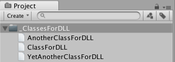

Managed Plugins
Usually, scripts are kept in a project as source files and compiled by Unity whenever the source changes. However, it is also possible to compile a script to a dynamically linked library (DLL) using an external compiler. The resulting DLL can then be added to the project and the classes it contains can be attached to objects just like normal scripts.
It is generally much easier to work with scripts than DLLs in Unity. However, you may have access to third party Mono code which is supplied in the form of a DLL. When developing your own code, you may be able to use compilers not supported by Unity by compiling the code to a DLL and adding it to your Unity project. You may also want to supply Unity code without the source (for example, for an Asset Store product) and a DLL is an easy way to do this.
Creating a DLL
To create a DLL, you will first need a suitable compiler. Not all compilers that produce .NET code are guaranteed to work with Unity, so it may be wise to test the compiler with some available code before doing significant work with it. If the DLL contains no code that depends on the Unity API then you can simply compile it to a DLL using the appropriate compiler options. If you do want to use the Unity API then you will need to make Unity's own DLLs available to the compiler. On a Mac, these are contained in the application bundle (you can see the internal structure of the bundle by using the Show Package Contents command from the contextual menu; right click or ctrl-click the Unity application):-
The path to the Unity DLLs will typically be
/Applications/Unity/Unity.app/Contents/Managed/
...and the two DLLs are called UnityEngine.dll and UnityEditor.dll.
On Windows, the DLLs can be found in the folders that accompany the Unity application. The path will typically be
C:\Program Files\Unity\Editor\Data\Managed
...while the names of the DLLs are the same as for Mac OS.
The exact options for compiling the DLL will vary depending on the compiler used. As an example, the command line for the Mono C# compiler, mcs, might look like this on Mac OS:-
mcs -r:/Applications/Unity/Unity.app/Contents/Managed/UnityEngine.dll -target:library ClassesForDLL.cs
Here, the -r option specifies a path to a library to be included in the build, in this case the UnityEngine library. The -target option specifies which type of build is required; the word "library" is used to select a DLL build. Finally, the name of the source file to compile is ClassesForDLL.cs (it is assumed that this file is in the current working folder, but you could specify the file using a full path if necessary). Assuming all goes well, the resulting DLL file will appear shortly in the same folder as the source file.
Using the DLL
Once compiled, the DLL file can simply be dragged into the Unity project like any other asset. The DLL asset has a foldout triangle which can be used to reveal the separate classes inside the library. Classes that derive from MonoBehaviour can be dragged onto Game Objects like ordinary scripts. Non-MonoBehaviour classes can be used directly from other scripts in the usual way.

Step by step guide for Visual Studio
This section explains how to build and integrate a simple DLL example with Visual Studio, and also how to prepare a debugging session for the DLL.
Setting Up the Project
First, open Visual Studio and create a new project. In Visual Studio, you should select File > New > Project and then choose Visual C# > Class Library.
You then need to fill out the information for the new library:
- Name is the namespace (for this example use "DLLTest" as the name).
- Location is the parent folder of the project.
- Solution name is the folder of the project.
Next, you should add references to the Unity DLLs. In Visual Studio, open the contextual menu for References in the Solution Explorer and choose Add Reference. Then, choose the option Browse > Browse > select file.
At this stage, you will have the option to select the required DLL file. On Mac OS X, the file path is:
Applications/Unity.app/Contents/Managed/UnityEngine.dll
On Windows, the path is:
Program Files\Unity\Editor\Data\Managed\UnityEngine.dll
Code
For this example, rename the class to MyUtilities in the Solution browser and replace its code with the following:
using System;
using UnityEngine;
namespace DLLTest {
public class MyUtilities {
public int c;
public void AddValues(int a, int b) {
c = a + b;
}
public static int GenerateRandom(int min, int max) {
System.Random rand = new System.Random();
return rand.Next(min, max);
}
}
}
With the code in place, build the project to generate the DLL file along with its debug symbols.
Using the DLL in Unity
For this example, create a new project in Unity and copy the built file <project folder>/bin/Debug/DLLTest.dll into the Assets folder. Then, create a C# script called "Test" in Assets, and replace its contents with the following code:
using UnityEngine;
using System.Collections;
using DLLTest;
public class Test : MonoBehaviour {
void Start () {
MyUtilities utils = new MyUtilities();
utils.AddValues(2, 3);
print("2 + 3 = " + utils.c);
}
void Update () {
print(MyUtilities.GenerateRandom(0, 100));
}
}
When you attach this script to an object in the scene and press Play, you will see the output of the code from the DLL in the Console window.
Setting up a debugging session for the DLL
Firstly, you should prepare the debug symbols for the DLL. In Visual Studio, execute in the command prompt, passing <project folder>\bin\Debug\DLLTest.pdb as a parameter:
Program Files\Unity\Editor\Data\Mono\lib\mono\2.0\pdb2mdb.exe
Then, copy the converted file <project folder>\bin\Debug\DLLTest.dll.mdb into Assets/Plugins.
With this setup completed, you can debug code that uses the DLL in Unity in the usual way. See the Scripting Tools section for further information about debugging.
Compiling 'unsafe' C# code
You can enable support for compiling ‘unsafe’ C# code in Unity. To do this, go to Edit > Project Settings, then select the Player category. Expand the Other Settings panel to reveal the Allow ‘unsafe’ Code checkbox.